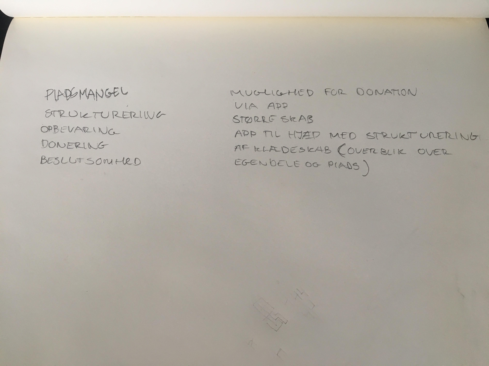

Brugerinterviews
Brugerinterview på klassen

Vi har foretaget en What-How-Why-metode på det filmklip, der blev vist i undervisningen.
Det kom der ovenstående ud af, hvor både behov, følelser og handlinger fremgår.
Brugerinterview med studerende
Vi lavede et interview med en studerende, og fik følgende svar:
Nej, det er ikke organiseret
Ja, da det er problematisk at finde ting hurtigt, hvorfor jeg bruger for lang tid på at lede efter et bestemt stykke tøj; jeg kunne bruge den tid på bedre ting
Jeg donerer tøj en gang i mellem, og føler at det er fint
Jeg donerer det, der kan bruges igen, men det ødelagte smider jeg bare ud, selvom jeg godt ved, at det ikke er det smarteste
Ja, jeg har rigtig meget pladsmangel. Burde købe et garderobeskab!
Jeg vil bare gerne have et større skab, men er ellers tilfreds med situationen vedrørende min garderobe